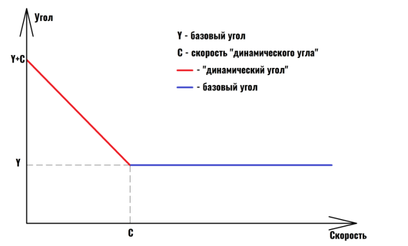

Работа с конфигуратором
1. Подключите терминал к персональному компьютеру с помощью кабеля USB (USB A – micro-B для УМКа310x, УМКа311, УМКа315; USB A – mini-B для УМКа312x).
2. Кабель в комплект поставки не входит и приобретается отдельно.
3. Внимание! Подключение терминала к ПК по USB без основного напряжения питания с целью конфигурирования не допускается. Обязательно подключение внешнего питания.
4. Для запуска приложения перейдите в «Пуск» → «Все программы» → «Конфигуратор УМКа3ХХ».
5. При первом запуске откроется стартовое окно конфигуратора, условно разделённое на четыре зоны: Панель статуса, панели инструментов, дерево настроек и окно отображения информации.
6. При запуске конфигуратор подключается к серверу обновлений и проверяет наличие обновлений для конфигуратора и прошивки терминала.
7. При наличии обновления появится окно с информацией о версии. Для загрузки обновления нажмите «Да».
8. Также можно проверить наличие обновлений вручную, нажав на пиктограмму «Проверить наличие обновлений» на панели инструментов.
2. Кабель в комплект поставки не входит и приобретается отдельно.
3. Внимание! Подключение терминала к ПК по USB без основного напряжения питания с целью конфигурирования не допускается. Обязательно подключение внешнего питания.
4. Для запуска приложения перейдите в «Пуск» → «Все программы» → «Конфигуратор УМКа3ХХ».
5. При первом запуске откроется стартовое окно конфигуратора, условно разделённое на четыре зоны: Панель статуса, панели инструментов, дерево настроек и окно отображения информации.
6. При запуске конфигуратор подключается к серверу обновлений и проверяет наличие обновлений для конфигуратора и прошивки терминала.
7. При наличии обновления появится окно с информацией о версии. Для загрузки обновления нажмите «Да».
8. Также можно проверить наличие обновлений вручную, нажав на пиктограмму «Проверить наличие обновлений» на панели инструментов.
Подключение терминала к ПК по USB без основного питания запрещено!
Для обеспечения стабильной работы терминала рекомендуется всегда обновлять терминал до последней версии прошивки.
В случае проблем с автоматическим обновлением конфигуратора, попробуйте запустить его от имени администратора (ПКМ по ярлыку → «Запуск от имени администратора»).
Панели инструментов и статусов
| Кнопка | Назначение |
|---|---|
| Открыть файл конфигурации | |
| Сохранить файл конфигурации | |
| Удаленное конфигурирование (Отключено/Включено) | |
| Прочитать конфигурацию из терминала | |
| Записать конфигурацию в терминал | |
| Переподключить терминал | |
| Обновить прошивку терминала (при наличии обновления пиктограмма меняет цвет) | |
| Очистка памяти терминала (стирает настройки пользователя или «черный ящик») | |
| Перезагрузить терминал | |
| Калькулятор статуса | |
| Проверка наличия обновлений | |
| Справка (руководство по эксплуатации) | |
| О программе |
Статусы и индикаторы
- Напряжение питания (Норма/Высокое/Низкое)
- Напряжение АКБ (Низкое/Высокое)
- Работа в роуминге (Гостевая сеть/Домашняя сеть)
- Соединение с основным, альтернативным и дополнительным сервером (Установлено/Не установлено)
- Соединение с сервером обновлений
- Координаты (Не валидны/Зафиксированы/Валидны)
- Соединение с сервером конфигурирования
- Bluetooth (Выключен/Включен)
Работа с настройками
Для просмотра и редактирования настроек терминала воспользуйтесь вкладками настроек. При нажатии на вкладку в окне отображения информации можно посмотреть соответствующие значения и отредактировать их.
Для удаленного конфигурирования нажмите кнопку «Удаленное конфигурирование», введите IMEI и пароль терминала, затем нажмите «Подключиться». Далее работа с конфигуратором не отличается от конфигурирования по USB.
Для записи изменённых настроек в терминал используйте пиктограмму «Записать конфигурацию в терминал».
Для ускорения настройки нескольких терминалов сохраните конфигурацию первого терминала в файл, а затем загружайте настройки в следующие терминалы с помощью пиктограмм «Открыть файл конфигурации» и «Записать конфигурацию в терминал».
Для получения справочной информации нажмите пиктограмму «Справка» на панели инструментов.
Чтобы посмотреть информацию о конфигураторе, нажмите пиктограмму «О программе» на панели инструментов.
Для удаленного конфигурирования нажмите кнопку «Удаленное конфигурирование», введите IMEI и пароль терминала, затем нажмите «Подключиться». Далее работа с конфигуратором не отличается от конфигурирования по USB.
Для записи изменённых настроек в терминал используйте пиктограмму «Записать конфигурацию в терминал».
Для ускорения настройки нескольких терминалов сохраните конфигурацию первого терминала в файл, а затем загружайте настройки в следующие терминалы с помощью пиктограмм «Открыть файл конфигурации» и «Записать конфигурацию в терминал».
Для получения справочной информации нажмите пиктограмму «Справка» на панели инструментов.
Чтобы посмотреть информацию о конфигураторе, нажмите пиктограмму «О программе» на панели инструментов.
Мобильный конфигуратор
1. Установите мобильное приложение-конфигуратор на смартфон.
2. Включите Bluetooth на терминале и смартфоне.
3. Запустите приложение и выполните поиск устройств.
4. Выберите нужный терминал из списка.
5. Введите PIN-код для подключения (по умолчанию: 1234).
6. После подключения настройте параметры через интерфейс приложения.
2. Включите Bluetooth на терминале и смартфоне.
3. Запустите приложение и выполните поиск устройств.
4. Выберите нужный терминал из списка.
5. Введите PIN-код для подключения (по умолчанию: 1234).
6. После подключения настройте параметры через интерфейс приложения.
PIN-код может отличаться, уточняйте у администратора.
Вкладка «Состояние»
На вкладке «Состояние» отображается общая информация о терминале, состояние входов/выходов терминала, внутренних и внешних датчиков.
В верхней части окна отображения информации можно посмотреть серийный номер терминала, его имя и IMEI, текущую версию прошивки и информацию о навигации.
В строке «Достоверность координат» могут выводиться два значения:
В верхней части окна отображения информации можно посмотреть серийный номер терминала, его имя и IMEI, текущую версию прошивки и информацию о навигации.
В строке «Достоверность координат» могут выводиться два значения:
- 0 – координаты недостоверны
- 1 – координаты достоверны
Если кликнуть по значению в строке «Статус», откроется окно «Калькулятор статуса», в котором отобразится расшифровка текущего состояния терминала (номер активной SIM-карты, признак фиксации координат, статус «черного ящика», статус батареи и др.).
Также калькулятор статуса можно вызвать, нажав на пиктограмму «Калькулятор статуса» на панели инструментов.
Также калькулятор статуса можно вызвать, нажав на пиктограмму «Калькулятор статуса» на панели инструментов.
Вкладка «GNSS-монитор»
На вкладке «GNSS-монитор» визуально отображается информация по спутникам: их расположение и качество сигнала.
Используется для контроля при монтаже и отладке терминала.
Используется для контроля при монтаже и отладке терминала.
Столбцами графически показаны спутники.
- Наполненность столбца и цифры сверху — уровень сигнала спутника.
- Цифры снизу — номер спутника.
- Жирным шрифтом обозначаются спутники, участвующие в расчёте.
- Цвет столбца: синие — GPS; красные — GLONASS; зелёные — WAAS.
На карте спутников на небосводе графически показаны расположения спутников относительно терминала.
- Прямые полосы определяют расположение спутника по горизонтали (север — сверху).
- Круги — высоту спутника (чем дальше от центра, тем выше).
Вкладка «История»
На вкладке «История» отображается история, хранящаяся в черном ящике терминала.
Прокрутка истории осуществляется скроллингом мыши или полосой прокрутки.
Новые записи добавляются в конец таблицы, старые — в начало.
Прокрутка истории осуществляется скроллингом мыши или полосой прокрутки.
Новые записи добавляются в конец таблицы, старые — в начало.
По двойному клику мыши в ячейку с параметром статуса откроется калькулятор статуса с расшифровкой параметра.
Для экспорта истории нажмите кнопку «Экспортировать в CSV» — история будет сохранена в CSV файл.
Для экспорта истории нажмите кнопку «Экспортировать в CSV» — история будет сохранена в CSV файл.
Вкладка «Навигация»
Для установки качества прорисовки маршрута и периодов записи используйте группу опций «Качество прорисовки маршрута».
Внимание: чем выше качество прорисовки, тем больше GPRS-трафик и расходы на связь.
Внимание: чем выше качество прорисовки, тем больше GPRS-трафик и расходы на связь.
- Минимальная скорость — значение скорости, выше которой ТС считается движущимся.
- Угол в градусах — изменение угла поворота, выше которого сохраняется точка трека.
- Расстояние — максимальное расстояние между точками записи координат, при превышении которого сохраняется точка трека.
- Изменение скорости — изменение скорости за секунду, выше которого сохраняется точка трека.
- Минимум между точками, м — минимальное расстояние между точками координат для оптимизации трафика.
Терминал рассчитывает минимальное расстояние между точками с учётом HDOP:
- Для HDOP < 1: коэффициент 2.5*HDOP
- Для HDOP ≥ 1: коэффициент 5.0*HDOP
- Используется большее значение между рассчитанным и заданным командой TRACK
Динамический угол — максимальный дополнительный угол при низкой скорости, уменьшает виляния трека и количество точек. По умолчанию отключён.

Установка периода записи в память — максимальное время между точками в движении и на стоянке.
Статическая навигация — фиксация координат во время стоянки для устранения «набегов координат» и избыточного трафика.
Статическая навигация — фиксация координат во время стоянки для устранения «набегов координат» и избыточного трафика.
- Определение стоянки: по акселерометру или по дискретному входу.
- Фиксация координат по акселерометру — включает режим, доступны опции «Порог срабатывания» и «Время перехода в статический режим, сек».
- Порог срабатывания — уровень вибраций для определения работы двигателя (1000 = 1g).
- Время перехода в статический режим, сек — время перехода после снижения вибраций.
- Срабатываний для входа из статического режима — сколько превышений порога за 60 сек для возврата из статического режима.
- Фиксация координат по входу — режим по логическому уровню на входе, доступны опции «Вход для статической навигации» и «Логический уровень входа».
- Вход для статической навигации — номер входа для определения работы двигателя.
- Логический уровень входа — уровень сигнала при заглушенном двигателе.
Если включена опция «Фиксация координат по входу», выбранный вход должен быть настроен как «Дискретный» или «Дискретный приоритетный» на вкладке «Входы/Выходы»!
При одновременной активации статической навигации по акселерометру и дискретному входу фиксация координат происходит только если оба канала фиксируют стоянку.
Валидность координат — определяется по количеству спутников и уровню HDOP.
- Максимальный HDOP — выше этого значения координаты считаются недостоверными.
- Макс. HDOP при мин. спутников — HDOP, выше которого координаты недостоверны при малом числе спутников.
- Минимальное количество спутников — ниже этого значения координаты недостоверны при высоком HDOP.
Сглаживание трека — параметр «Коэффициент фильтрации» (от 1 до 100, 0 — фильтр отключён). Реальный коэффициент умножается на HDOP: при хорошем HDOP сглаживание уменьшается, при плохом — увеличивается. Значение подбирается по типу техники.
Вкладка «Входы/Выходы»
Для настройки входов используется вкладка «Входы/Выходы».
Для аналоговых входов доступны режимы:
- Дискретный + — настройка уровней логического 0 и 1 (от 0 до 40000 мВ). Уровень логического 0 не может быть больше уровня логической 1.
- Дискретный приоритетный (+) — при срабатывании фиксируется внеочередное событие в ЧЯ и на сервере.
- Аналоговый
- Аналоговый ДУТ — возможность настроить параметры фильтрации, минимальный и максимальный диапазон входного сигнала ДУТ.
Вкладка «SIM-карты»
В терминале имеется возможность установки одной SIM-карты.
Для настройки доступа к ней (PIN-код) и настройки GPRS-соединения используется вкладка «SIM-карты».
Для настройки доступа к ней (PIN-код) и настройки GPRS-соединения используется вкладка «SIM-карты».
Вся информация для доступа к интернету (APN, логин, пароль) может быть получена у оператора сотовой сети.
Для популярных операторов имеется возможность выбора соответствующего профиля, настройки которого заносятся автоматически.
Для популярных операторов имеется возможность выбора соответствующего профиля, настройки которого заносятся автоматически.
Если есть необходимость использовать SIM-карту в режиме роуминга, включите опцию «Разрешить роуминг на SIM карте».
Работа терминала в роуминге может повлечь дополнительный расход денежных средств согласно тарифу оператора!
Вкладка «Серверы»
Для настройки соединения с сервером используется вкладка «Серверы», в которой должен быть указан IP-адрес или домен и порт сервера системы мониторинга.
Имеется возможность указать альтернативный и дополнительный адрес сервера мониторинга в полях «Альтернативный сервер» и «Дополнительный сервер».
Не стоит настраивать два одинаковых сервера — это приведёт к неправильной работе устройства и повышению расхода трафика! Соблюдайте очерёдность: Основной сервер → Альтернативный сервер → Дополнительный сервер. Если очерёдность нарушена (например, пропущен альтернативный), настройки дополнительного будут проигнорированы.
Дополнительные параметры: управляют сохранением и отправкой на сервер данных от внутренних и внешних датчиков. Снимите соответствующие галочки, если нет необходимости отправлять эти параметры — это сократит трафик и повысит ёмкость чёрного ящика.
- Протокол: позволяет выбрать протокол передачи данных.
- Порядок выгрузки: определяет порядок выгрузки данных на сервер при успешном соединении (От старых к новым / Сначала актуальные).
Режим on-line: управляет группировкой нескольких точек в один пакет, промежутком времени между отправкой пакетов, а также позволяет задать максимальный размер передаваемого пакета и порядок выгрузки.
Вкладка «Интерфейсы»
Не доступна для УМКа311.
На вкладке «Интерфейсы» осуществляется настройка интерфейсов связи терминала, в частности, для подключения устройств, работающих по интерфейсу RS-485.
В данной вкладке можно отключить или включить работу «Дут по LLS» и настроить скорость интерфейса.
Для этого в выпадающем списке «Режим» следует выбрать необходимый режим, а в выпадающем списке «Скорость» указать рабочую скорость интерфейса.
Для этого в выпадающем списке «Режим» следует выбрать необходимый режим, а в выпадающем списке «Скорость» указать рабочую скорость интерфейса.
- Режим работы интерфейса: определяет тип работы (например, RS-232, RS-485, CAN).
- Скорость: скорость передачи данных.
- Четность: параметр проверки четности (нет, чет, нечет).
- Бит данных: количество бит данных.
- Стоп-бит: количество стоп-бит.
- Входные и выходные данные: определяет, какие данные терминал будет принимать и передавать через этот интерфейс.
- Протокол: протокол обмена данными (например, Wialon IPS, Omnicomm, LLS-IF).
При выборе протокола Omnicomm или LLS-IF появляется возможность настроить адреса датчиков.
Вкладка «ДУТы LLS»
Не доступна для УМКа311.
Для настройки и получения информации от датчиков уровня топлива, использующих интерфейс RS-485, воспользуйтесь вкладкой «ДУТы LLS».
Предварительно присвойте адреса каждому из датчиков соответствующим конфигуратором.
Предварительно присвойте адреса каждому из датчиков соответствующим конфигуратором.
Для указания адресов терминалу, достаточно записать их в поле «Настройка адресов ДУТ RS-485» и загрузить конфигурацию в терминал.
Конфигуратор автоматически показывает подключенные датчики и выдаваемые ими параметры.
Конфигуратор автоматически показывает подключенные датчики и выдаваемые ими параметры.
Предварительно на вкладке «Интерфейсы» необходимо перевести один из доступных интерфейсов в режим «ДУТ по LLS», установить для опции «Скорость» значение «19200» и записать настройки в терминал.
Настройка параметров сглаживания ДУТов «ЭСКОРТ»:
- Для получения текущего параметра сглаживания: выберите ДУТ и нажмите кнопку «Запросить».
- Для установки параметра сглаживания: выберите ДУТ, введите параметр сглаживания и нажмите кнопку «Установить режим».
Вкладка «BLE сканер»
На вкладке «BLE сканер» (Рисунок 3.25 ) отображаются фактически видимые терминалом BLE-устройства, их количество, MAC-адреса, уровень сигнала и имена. Используется для поиска и добавления BLE-датчиков в чёрный ящик терминала.
Перед началом работы с ДУТами BLE:
Перейдите в конфигураторе во вкладку «Система» и в группе параметров «Параметры Bluetooth» из выпадающего окна выберите «BLE» (BLEMODE 2) или «Конфиг. и BLE» (BLEMODE 3). После выполните запись конфигурации в терминал.
Перейдите в конфигураторе во вкладку «Система» и в группе параметров «Параметры Bluetooth» из выпадающего окна выберите «BLE» (BLEMODE 2) или «Конфиг. и BLE» (BLEMODE 3). После выполните запись конфигурации в терминал.
Нажмите кнопку «Поиск» для запуска сканирования.
После завершения сканирования в таблице отобразятся найденные BLE-датчики. В таблице будут указаны:
После завершения сканирования в таблице отобразятся найденные BLE-датчики. В таблице будут указаны:
- №: Порядковый номер
- MAC: MAC-адрес датчика
- RSSI: Уровень сигнала
- Батарея: Уровень заряда батареи (при наличии информации)
По нажатию правой кнопки мыши по требуемому ДУТ BLE можно из выпадающего окна выбрать его номер.
Для добавления датчика в чёрный ящик выберите его в таблице и нажмите кнопку «Добавить».
Для удаления датчика из чёрного ящика выберите его и нажмите кнопку «Удалить».
Для очистки всей таблицы сканирования нажмите кнопку «Очистить».
Для удаления датчика из чёрного ящика выберите его и нажмите кнопку «Удалить».
Для очистки всей таблицы сканирования нажмите кнопку «Очистить».
После добавления датчика в чёрный ящик, его данные будут передаваться на сервер.
Вкладка «Датчики BLE»
Для настройки и получения информации от датчиков, работающих через BLE, воспользуйтесь вкладкой «Датчики BLE».
Выберите тип устройства из выпадающего списка и введите MAC-адрес в соответствующее поле. После этого загрузите конфигурацию в терминал.
Выберите тип устройства из выпадающего списка и введите MAC-адрес в соответствующее поле. После этого загрузите конфигурацию в терминал.
Детальное описание параметров датчиков BLE содержится в Приложении Е руководства по эксплуатации.
Вкладка «Фильтры ДУТ»
Для настройки фильтрации уровня топлива, а также контроля слива/заправки используется вкладка «Фильтры ДУТ».
На вкладке доступна настройка 7 ДУТ:
- С 0 по 2 — проводные ДУТ.
- С 7 по 10 — беспроводные ДУТ.
- 15 — аналоговый ДУТ.
Для каждого датчика в соответствующих ячейках имеется возможность настройки:
- Режима фильтрации: может быть «простой фильтр» (ФНЧ) или «составной фильтр» (медианный + ФНЧ). Простой фильтр хорошо фильтрует шум, составной — резкие кратковременные выбросы. Рекомендуется начинать с ФНЧ.
- Уровня: уровень фильтрации от 1 до 20. Это время в минутах, за которое выходной сигнал фильтра изменяется на 95% от изменения входного сигнала.
- Шага изменений: настраивает формирование дополнительных точек при изменении уровня топлива на указанное количество единиц уровня. Если 0 — дополнительные точки не формируются.
- Время заправки: задаёт время, через которое фильтр отключается при непрерывном увеличении уровня топлива (по умолчанию 10 секунд).
- Время слива: задаёт время, через которое фильтр отключается при непрерывном уменьшении уровня топлива (по умолчанию 30 секунд).
Вкладка «Идентификация BLE»
На вкладке «Идентификатор BLE» можно настроить терминал на режим приемника или на режим маяка.
Режим приемника
В режиме приемника терминал отслеживает события заданной группы маяков.
- В столбце «Режим» из выпадающей вкладки можно выбрать проверку совпадений по требуемым идентификаторам. Для отслеживания всех меток в радиусе следует выбрать «Любые».
- В столбце «Радиус» задается радиус прямой видимости, в котором будут отслеживаться метки.
- В столбец «UUID» вводится уникальный идентификатор группы маяков.
- В столбце «Major» вводится номер группы меток с одинаковым UUID.
- В столбце «Minor» вводится номер группы меток с одинаковым UUID и Major.
Поставив галочку на «Передавать 0» терминал будет слать на сервер значение «0» при отсутствии событий в радиусе отслеживания в соответствии с настроенным фильтром.
Поставив галочку на «Событие» терминал будет слать на сервер изменения в радиусе отслеживания в соответствии с настроенным фильтром.
Режим маяка
Для включения режима маяка требуется установить галочку в соответствующее поле конфигуратора.
- UUID - 128-битный уникальный идентификатор группы маяков, определяющий их тип или принадлежность одной организации. Для получения уникальных UUID следует нажать на кнопку сгенерировать UUID.
- При помощи «Major» осуществляется настройка 16-битного беззнакового значения, с помощью которого можно группировать маяки с одинаковым UUID. Значение в диапазоне от 0 до 65535.
- При помощи «Minor» осуществляется настройка 16-битного беззнакового значения, с помощью которого можно группировать маяки с одинаковым UUID и Major. Значение в диапазоне от 0 до 65535.
- RSSI – опорный уровень сигнала на расстоянии в 1 метр. Необходим для более корректного определения расстояния до приёмника.
Вкладка «Телефоны»
Для добавления, редактирования и удаления телефонных номеров, имеющих доступ к конфигурированию терминала, используется вкладка «Телефоны».
Обращаем Ваше внимание на то, что количество номеров ограничено пятью.
Обращаем Ваше внимание на то, что количество номеров ограничено пятью.
Для добавления телефонного номера:
1. Нажмите «Добавить».
2. В появившемся окне введите номер телефона и нажмите «ОК».
1. Нажмите «Добавить».
2. В появившемся окне введите номер телефона и нажмите «ОК».
Для редактирования телефонного номера:
1. Выберите номер из списка.
2. Нажмите «Изменить».
3. В появившемся окне введите номер телефона и нажмите «ОК».
1. Выберите номер из списка.
2. Нажмите «Изменить».
3. В появившемся окне введите номер телефона и нажмите «ОК».
Для удаления телефонного номера:
1. Выберите номер из списка.
2. Нажмите «Удалить».
3. В появившемся окне нажмите «Да».
1. Выберите номер из списка.
2. Нажмите «Удалить».
3. В появившемся окне нажмите «Да».
Вкладка «Скрипты»
Для работы со скриптами используется вкладка «Скрипты» (Рисунок 3.32 ).
Нажмите на кнопку «Выбрать» и укажите путь к файлу скрипта. Выберите требуемый скрипт и нажмите «Выбрать».
Нажмите на кнопку «Выбрать» и укажите путь к файлу скрипта. Выберите требуемый скрипт и нажмите «Выбрать».
Для начала работы скрипта нажмите на кнопку «Запустить». В поле «значение» начнут появляться требуемые параметры.
Установите галочки напротив требуемых параметров для передачи на сервер.
Установите галочки напротив требуемых параметров для передачи на сервер.
Для передачи параметров на сервер установите галочку на параметре «Разрешить передачу параметров».
При установленной галочке «Автозапуск» скрипт будет отрабатывать сразу после включения терминала.
Вкладка «Система»
Для настройки доступа к терминалу используется вкладка «Система» (Рисунок 3.33 ), где можно задать имя терминала и пароль доступа к нему.
Этот же пароль используется при удаленном конфигурировании и конфигурировании терминала через SMS-команды.
Для смены пароля требуется нажать кнопку «Изменить». Смена имени производится без подтверждения.
Этот же пароль используется при удаленном конфигурировании и конфигурировании терминала через SMS-команды.
Для смены пароля требуется нажать кнопку «Изменить». Смена имени производится без подтверждения.
Постоянное удаленное конфигурирование:
Для включения используйте опцию «постоянное соединение» в группе опций «Удаленное конфигурирование». При включении этой опции терминал, находясь в режиме онлайн, будет постоянно подключен к серверу конфигурации в ожидании подключения конфигуратора.
Для включения используйте опцию «постоянное соединение» в группе опций «Удаленное конфигурирование». При включении этой опции терминал, находясь в режиме онлайн, будет постоянно подключен к серверу конфигурации в ожидании подключения конфигуратора.
Параметры Bluetooth:
Для включения Bluetooth используйте опцию «конфигурирование по BT». При включении этой опции на терминале будет постоянно включен Bluetooth-интерфейс для конфигурирования по Bluetooth.
Для включения Bluetooth используйте опцию «конфигурирование по BT». При включении этой опции на терминале будет постоянно включен Bluetooth-интерфейс для конфигурирования по Bluetooth.
Управление режимами энергосбережения (Менеджер питания, см. 2.13):
Здесь можно настроить время и нижний порог напряжения до перехода в режим ожидания/бездействия.
Здесь можно настроить время и нижний порог напряжения до перехода в режим ожидания/бездействия.
- Время: от 1 до 592200 сек. для режима ожидания, от 1 до 86400 для режима бездействия.
- Нижний порог напряжения: от 0 до 42000 милливольт для обоих режимов.
Параметры аккумулятора:
Для настройки работы от аккумулятора используйте эту группу опций.
Для настройки работы от аккумулятора используйте эту группу опций.
- Быстрый заряд АКБ: включает режим быстрого заряда. (Описание режима можно посмотреть в разделе «Менеджер питания»).
- Ёмкость АКБ, mA: позволяет установить емкость установленного аккумулятора для корректной работы. Диапазон значений от 250 до 1100 мА.
- Время работы от АКБ, сек: позволяет установить ограничение времени работы от внутреннего аккумулятора при отсутствии основного напряжения питания. При установке значения «0» терминал будет продолжать работу максимально возможное время. Максимальное значение параметра 84600 сек.
- Время до перехода в режим бездействия от АКБ, сек: позволяет установить время до перехода в режим бездействия (IDLE) при работе от АКБ.
Параметры окна активности:
- Время начала окна активности в UTC: настраивает время вывода терминала из режима энергосбережения.
- Продолжительность окна активности: задает время, на протяжении которого терминал не будет находиться в режиме энергосбережения для передачи текущего состояния и местонахождения.
Вкладка «Консоль»
Для ручного ввода команд (Приложение А) и диагностики терминала используется вкладка «Консоль» (Рисунок 3.34 ).
Команды вводятся в поле в нижней части окна. При наборе отображаются ранее введенные команды. Для быстрого завершения ввода можно выбрать одну из них.
Также в выпадающем списке доступны все ранее введённые команды.
Отправка команды происходит по нажатию клавиши «Enter» или кнопки «Отправить».
Отправленные команды и результаты их выполнения отображаются в основном окне. При этом напротив команды отображается символ «>», а напротив ответа символ «<».
Также в выпадающем списке доступны все ранее введённые команды.
Отправка команды происходит по нажатию клавиши «Enter» или кнопки «Отправить».
Отправленные команды и результаты их выполнения отображаются в основном окне. При этом напротив команды отображается символ «>», а напротив ответа символ «<».
Для очистки консоли в контекстном меню выберите опцию «Очистить лог».
Для сохранения содержимого консоли в контекстном меню выберите опцию «Сохранить в файл».
Для сохранения содержимого консоли в контекстном меню выберите опцию «Сохранить в файл».
Чтобы проанализировать работу отдельных модулей или терминала целиком, можно использовать кнопку «Режим отладки». В результате появится окно (Рисунок 3.35 ) с возможностью выбора необходимого модуля («Источник») и фильтра уровня сообщений («Уровень»). После нажатия кнопки «Применить» в основном окне будут отображаться отладочные сообщения.
Конфигурирование посредством SMS сообщений
Терминал имеет возможность конфигурирования и диагностики через SMS-сообщения. На каждую команду, описанную в Приложении А, от авторизованного номера терминал высылает ответ.
Перед началом работы с терминалом через SMS-сообщения необходимо авторизовать номер телефона, с которого будут приходить команды, командой
Перед началом работы с терминалом через SMS-сообщения необходимо авторизовать номер телефона, с которого будут приходить команды, командой
AUTH.
Отправьте SMS с нужной командой на номер устройства.
Дождитесь подтверждения выполнения команды.
Дождитесь подтверждения выполнения команды.
Список поддерживаемых SMS-команд смотрите в приложении к руководству.
Система удаленного управления устройствами УМКа3XX
Используйте специализированное ПО для удалённого управления.
Подключитесь к устройству по сети и выполните необходимые действия.
Подключитесь к устройству по сети и выполните необходимые действия.
Удалённое управление доступно только при наличии соответствующих прав доступа.